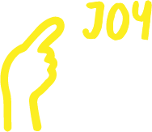
01Choose
Pick an emotion you want to express.
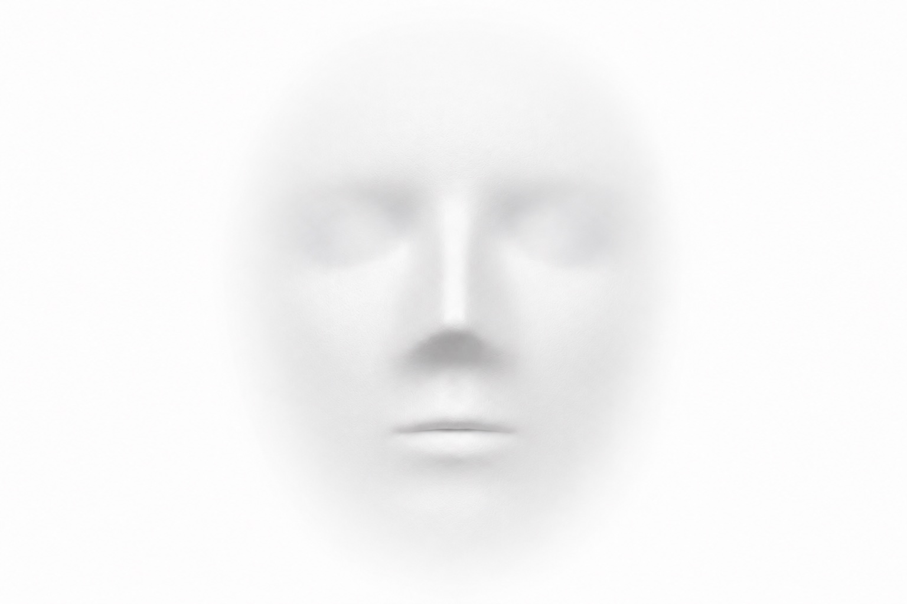
A multisensory experience where people discover new, deeper forms of communication.
Come as a couple, a team, a group of friends, or strangers. Everyone leaves knowing someone a little better than words and faces allow.
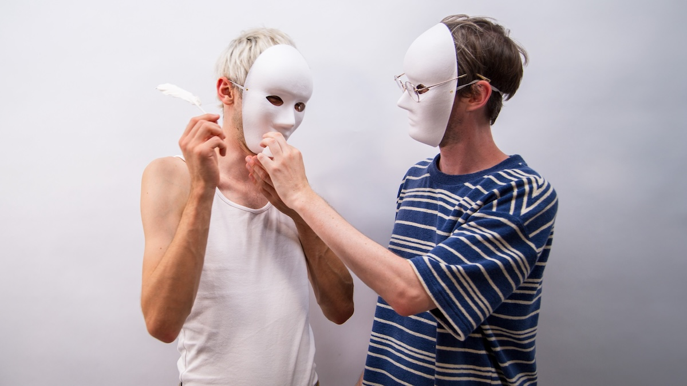
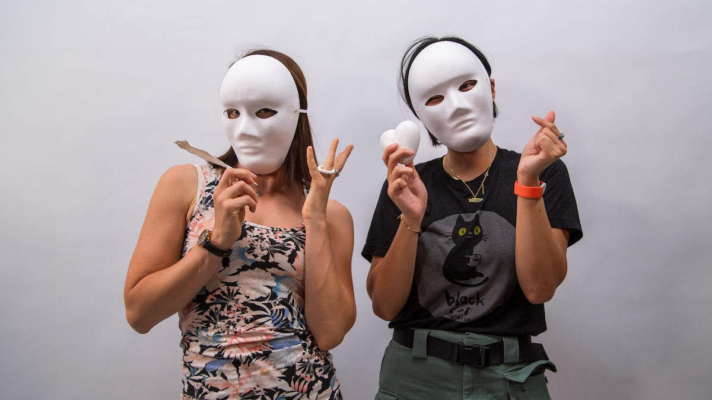
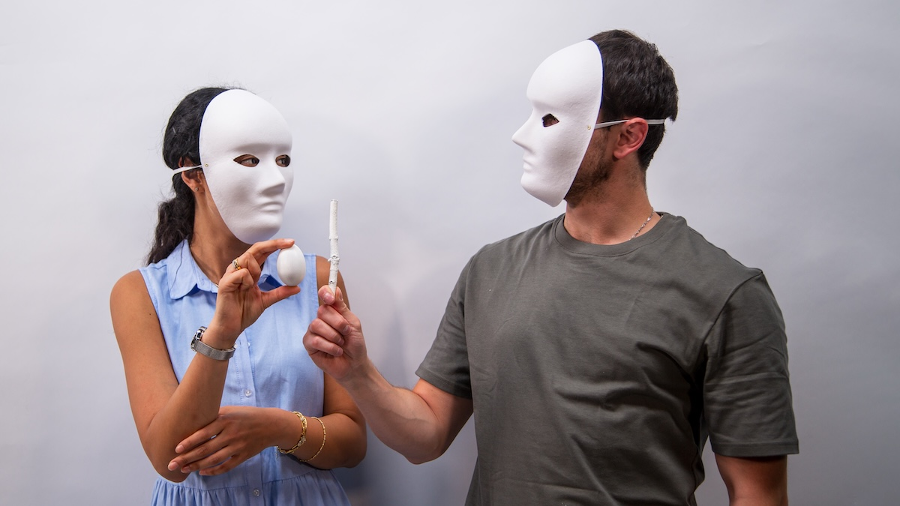
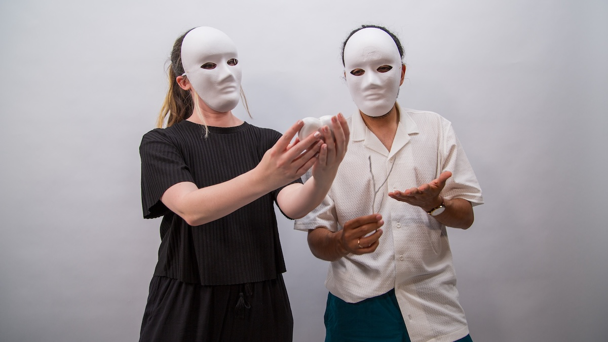
Silent conversation
Without Faces is a multi-sensory experience where people rediscover how to understand each other. Through facilitated sessions, people invent unfamiliar languages using shapes, colors, scents, and tastes to translate emotions into something visible.
The session gives people a shared experience of deliberate communication. By removing speech and facial expression, it resets how we pay attention to one another. It’s a space where people meet, sense, and shape emotions together, creating connection without words, without faces.
It’s a space where people meet, sense, and shape emotions together, creating connection without words, without faces.


How it works

01Pick an emotion you want to express.
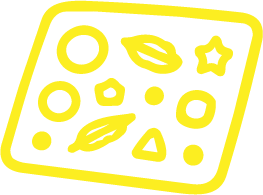
02Arrange shapes, colors, scents, and/or tastes into a message.
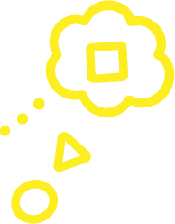
03Your partner reads it, without words.
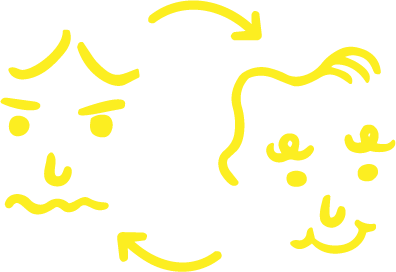
04Swap roles and respond, turning it into a conversation.
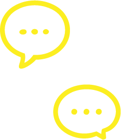
05Compare what was meant with what was understood.
Couples & Dates
A new way to notice each other, first date or years in.
Friends & Family
A night out that brings you closer together.
Companies & Teams
A team-building experience that changes how you collaborate.
Schools & Workshops
A hands-on way to explore empathy and expression.
The experience makes people feel something they rarely notice: that communication is built, not given. When the usual channels close, emotion is still there, but it can't reach anyone. That loss is real, and so is what replaces it. People stop relying on words and start inventing, and in that invention they often understand each other more honestly than they did before. You leave with the memory of reaching someone with nothing but attention, and being reached for in return.
48-hour exhibition
Without Faces has been facilitated several times in the past, including at Media University Berlin in 2024 and 2025, and most recently at 48 Stunden Neukölln 2026, one of the city's longest-running art festivals.
In each setting, people sat down across from someone else, sometimes a stranger, sometimes someone they knew well, and held a conversation without a single word. Seeing it work in a full room, again and again, is what turned the experience from an experiment into something we now bring to teams, couples, and groups anywhere.
View gallery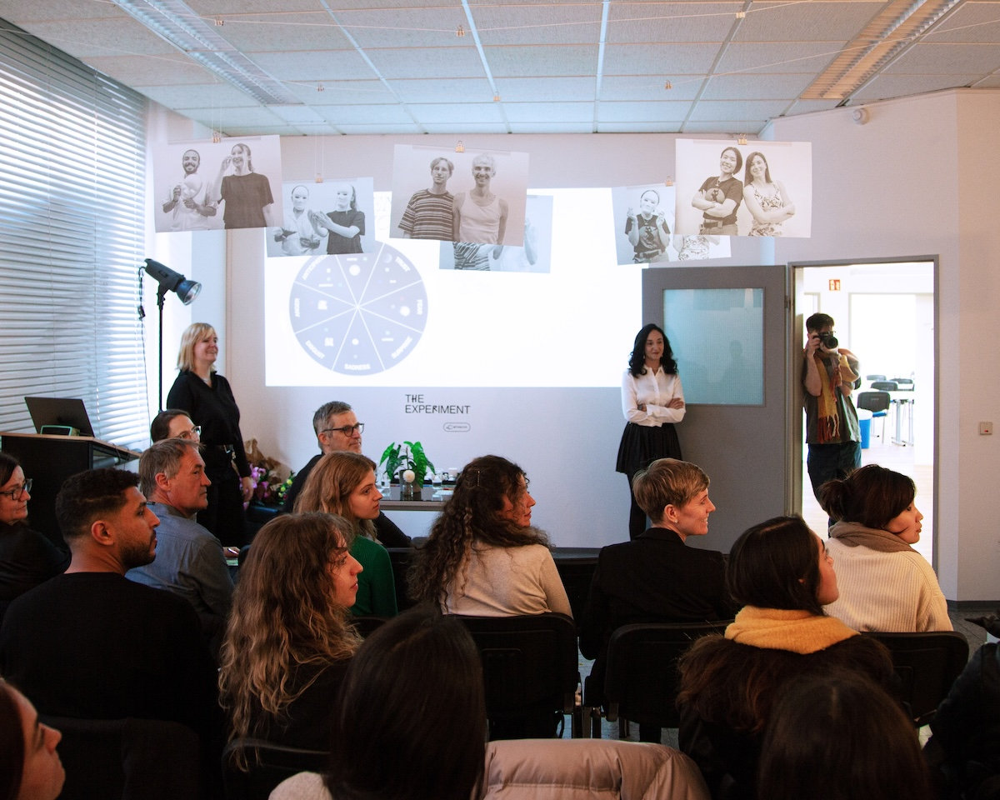
Theory into practice
Without Faces grew out of our master's thesis in speculative design. Working in the field, we noticed it rarely addressed emotion, so we built a speculative future to explore it: a world where people share identical faces and voices, and, driven by productivity and disconnected from one another, have lost the ability to express or detect feelings.
Where traditional speculative design leans toward tech-driven dystopia, our 247-page thesis proposes an alternative we call Human-Centered Speculative Design, an approach rooted in emotion, connection, and empathy. The project received an ADC Silver Award in the Communication Arts category.
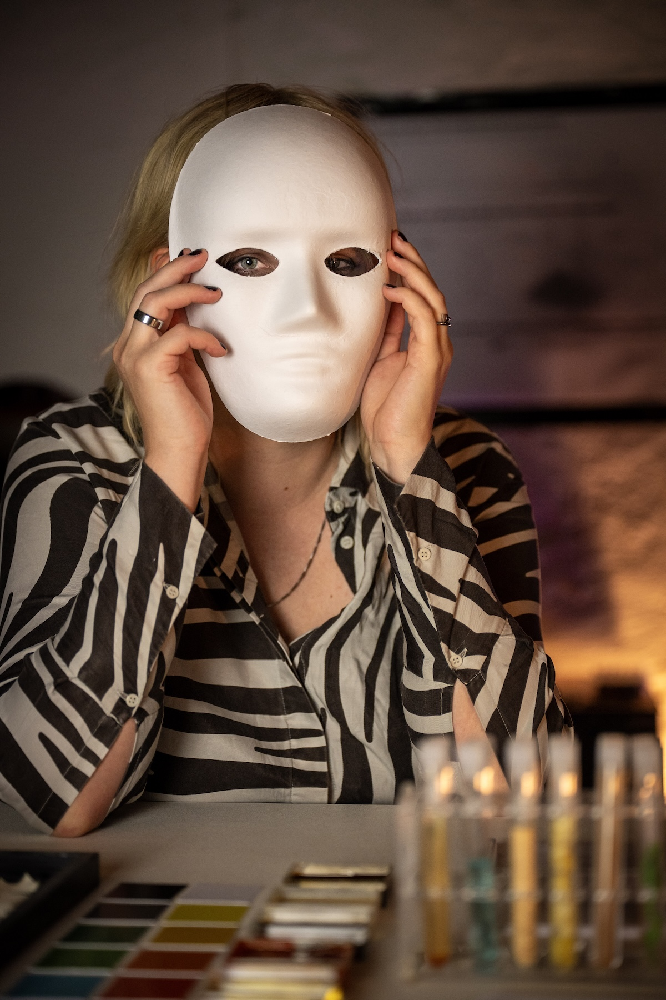
Anan Mahmoud & Vera Schmid
We are Vera and Anan, communication designers exploring the future of human connection through design, research and experimentation.
Face reveal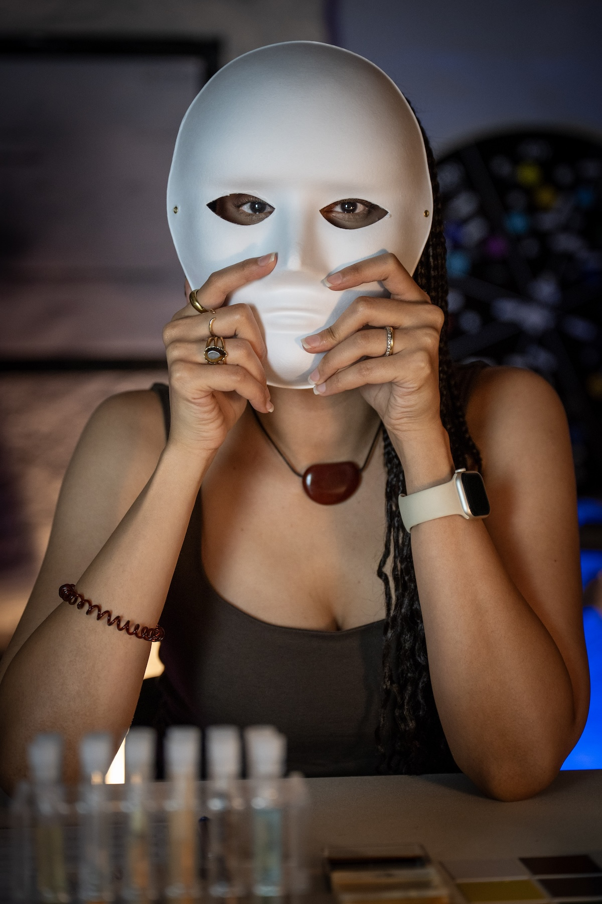
For teams
Whether it is your team, your friends, or someone you love, Without Faces gives you the chance to truly understand one another. Tell us a little about your group, and we will shape a session around it.
Format
In-person, facilitated
Group size
2–30 people (min–max), two conversations run side by side at a time
Session length
15–20 minutes per conversation
Location
Your preferred space
Languages
English / German
Price
On request